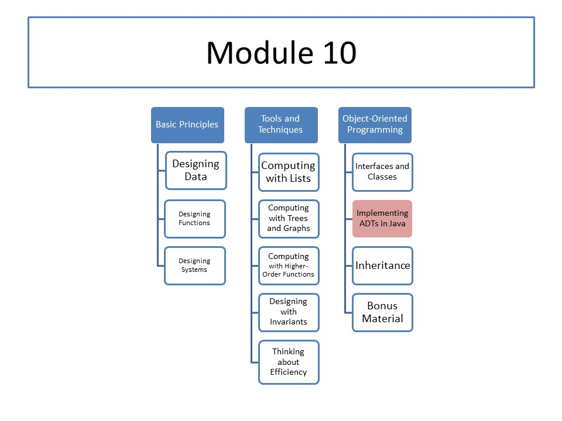

CS 5010: Module 10
Module Overview
This module introduces abstract data types. It then covers several Java-specific features that are related to abstract data types.
Course Map
Readings
No required readings.
Resources
We recommend the following tutorials, especially if you do not feel comfortable programming in Java.
- Lesson: Common Problems (and Their Solutions)
-
Trail: Learning the Java Language
(You can use this as a reference manual for the Java language. The real reference manuals for Java are far more detailed, and tell you more than you need to know for this course.)
We use Java's standard libraries as a source of examples:
Lessons
- Lesson 10.1: Abstract Data Types
- Lesson 10.2: Equality
- Lesson 10.3: Static Methods
- Lesson 10.4: Testing Simple Objects
Problem Set
Problem Set 10 is due on Monday, 27 November 2017, at 6pm local time.